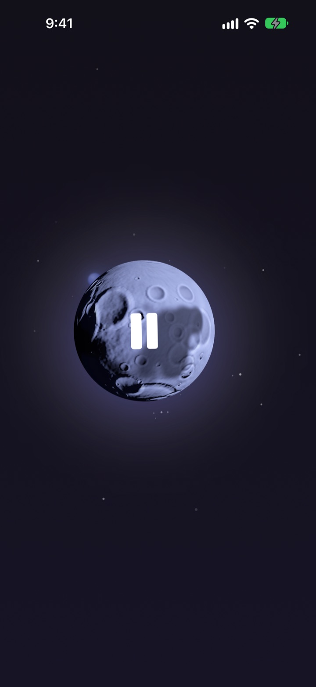
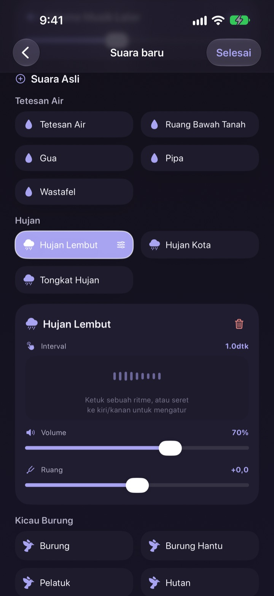
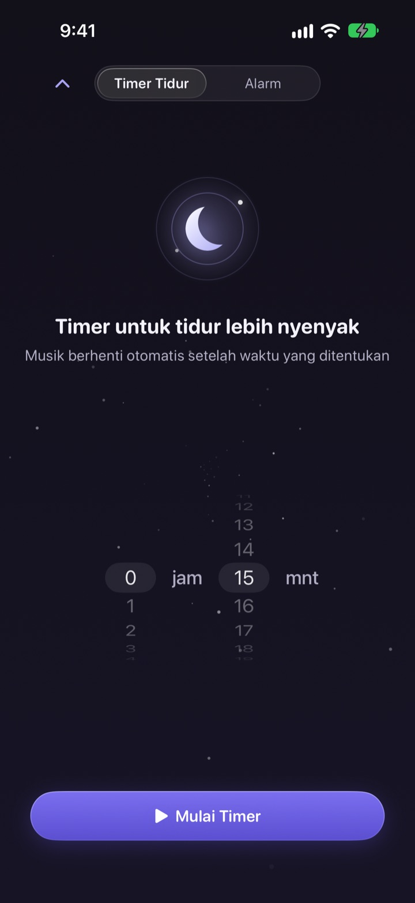
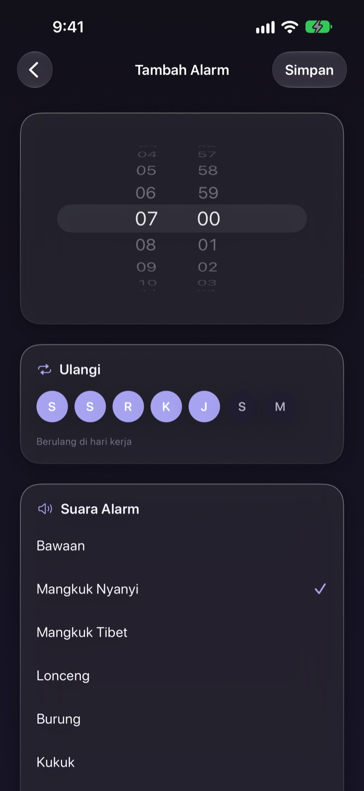
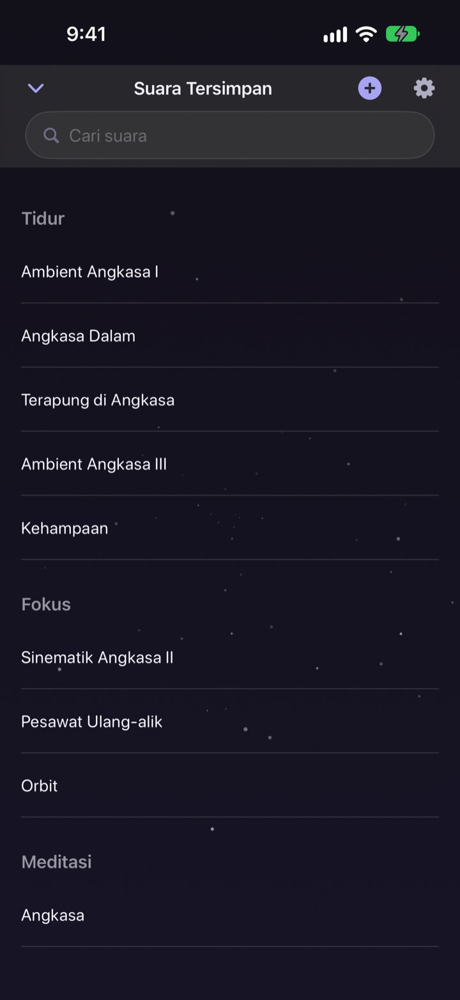

Jangan habiskan malam
untuk mencari suara yang pas
Tumpuk hujan, tetesan air, dan singing bowl jadi suaramu sendiri sekali saja. Mulai malam berikutnya, cukup ketuk bulan.
Semua suara bisa didengar gratis. Untuk iPhone dan iPad.

Pernah menghabiskan satu jam cuma untuk memilih suara sebelum tidur?
Suara hujan terlalu datar, ombak terlalu keras, dan video yang diputar terpotong iklan tengah malam. Di Dalbit kamu sendiri yang menumpuk suara favorit sampai pas di telinga, lalu menyimpannya di balik satu bulan.
Racik suaramu lapis demi lapis
Tumpuk suara hujan, tetesan air, kicau burung, dan singing bowl. Atur volume, seberapa sering terdengar, dan dari mana suaranya datang untuk tiap lapisan, lalu tambahkan ombak atau piano sebagai musik latar.
Beri nama racikanmu, simpan, dan putar lagi kapan pun.

Mereda tanpa membangunkanmu
Timer tidur tidak pernah memutus suara mendadak. Suara dikecilkan perlahan supaya akhirnya tidak membangunkanmu.
Suara tetap berjalan saat layar mati atau di aplikasi lain, dan kalau dibiarkan, layar akan meredup sendiri.

Pagi hari dibangunkan dengan lembut
Pasang alarm dengan singing bowl, mangkuk Tibet, kicau burung, atau kukuk, dan ulangi di hari-hari yang kamu pilih.

Satu bulan untuk semuanya
Ketuk bulan untuk memutar, ketuk lagi untuk jeda. Geser ke samping untuk ganti suara, ke atas untuk timer tidur, ke bawah untuk suara yang tersimpan.
Kalau ketemu suara yang pas, tekan lama bulan untuk menambahkannya ke favorit.

Mulai dalam tiga langkah
- 1
Ketuk bulan
Buka aplikasi, ketuk bulan, dan suara langsung terdengar.
- 2
Geser ke samping
Terus geser sampai ketemu suara yang kamu suka.
- 3
Pasang timer lalu berbaring
Geser ke atas, pilih waktu, setelah itu suara perlahan menghilang.
Yang bisa dilakukan bulan
- Ketuk
- putar, jeda
- Geser ke samping
- suara lain
- Geser ke atas
- timer tidur dan alarm
- Geser ke bawah
- suara tersimpan
- Tekan lama
- tambah ke favorit
Kamu juga bisa menjeda dan melanjutkan dari kontrol pemutaran di layar kunci.
Mendengarkan gratis. Premium untuk meracik lebih banyak.
Gratis
- Semua suara
- Menumpuk suara jadi racikan sendiri
- Simpan hingga tiga racikan
- Timer tidur yang memudar perlahan
- Alarm dengan suara lembut
- Favorit
Dalbit Premium
- Buat dan simpan racikan sebanyak yang kamu mau
Langganan bulanan yang diperpanjang otomatis, dengan uji coba gratis
Langganan diperpanjang otomatis kecuali dibatalkan paling lambat 24 jam sebelum periode berjalan berakhir, dan tagihan dimulai setelah uji coba gratis selesai. Berlaku Ketentuan Penggunaan standar Apple (EULA).
Pertanyaan umum
Bagaimana cara memutar dan mengganti suara?
Ketuk bulan di layar utama untuk memutar, ketuk lagi untuk berhenti. Geser ke samping untuk suara lain, ke atas untuk timer tidur, dan ke bawah untuk pustakamu.
Apakah suara berhenti saat layar mati?
Tidak. Suara tetap berjalan saat layar mati atau saat pindah ke aplikasi lain. Untuk menghentikannya, ketuk bulan lagi atau pakai kontrol di layar kunci.
Apa yang terjadi saat timer tidur habis?
Suara tidak terputus mendadak, tapi mengecil sedikit demi sedikit lalu berhenti, supaya kamu tidak terbangun.
Alarm tidak berbunyi.
Saat membuat alarm pertama, aplikasi meminta izin alarm. Pastikan izinnya aktif di Pengaturan > Dalbit.
Di mana racikanku disimpan?
Racikan, alarm, dan pengaturan hanya disimpan di perangkat ini. Kalau aplikasi dihapus, semuanya ikut terhapus.
Apa saja yang gratis?
Semua suara, menumpuk lapisan, dan menyimpan hingga tiga racikan sendiri. Timer tidur dan alarm juga gratis. Premium menghapus batas jumlah racikan.
Bagaimana cara membatalkan langganan?
Buka Pengaturan > Akun Apple > Langganan, pilih Dalbit, lalu batalkan. Kalau tidak dibatalkan paling lambat 24 jam sebelum periode berjalan berakhir, langganan diperpanjang otomatis.
Ganti HP dan langganan hilang.
Masuk dengan Akun Apple yang sama, buka layar langganan di Dalbit, lalu ketuk Pulihkan Pembelian.
Bagaimana melaporkan bug atau mengusulkan fitur?
Kirim masukan dari pengaturan aplikasi atau email ke alamat di bawah. Biasanya kami membalas dalam beberapa hari.
Ada pertanyaan atau ide? Kirim ke mizzking75@gmail.com.